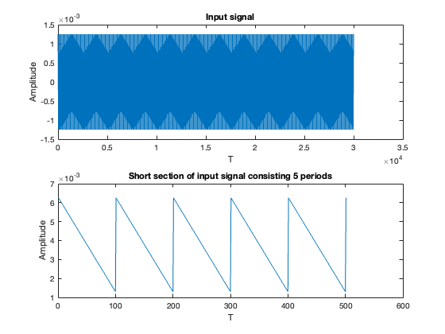
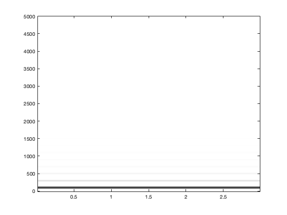
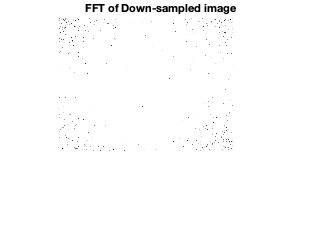
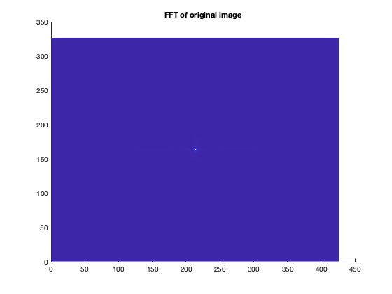
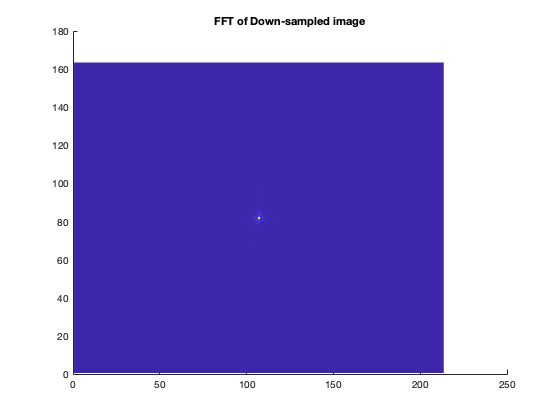
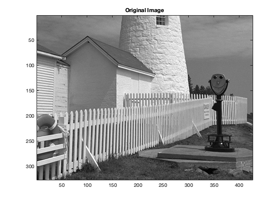

Contents
- Project_Group_2
- Lab2_Exercise_2.1
- (a) First Part: a signal that “chirps” up to a very high frequency,
- 2.1
- 2.1 (a) Second Part: Determine the parameters for the signal
- 2.1(b) Generate the signal and plot in spectrogram with short section length
- 2.1 c
- Lab2_Exercise_2.2
- 2.2.1:Spectrogram of Periodic Triangle Wave
- 2.2.2:Decibels (dB): Seeing Small Values in the Spectrogram
- 2.2.3: Spectrogram in dB
- Lab3_Exercise_3.1
- Plots for the 2D-FFT of the images for visual representation of the
- Lab3_Exercise_3.2
- This first part sets up the scaled down image from 3.1.
- Part a: Plot the vector xr1hold to verify that it is a zero-order hold version derived from xr1. Explain what values are contained in the indexing vector nn. If xr1hold is treated as an interpolated version of xr1, then what is the interpolation factor?
- Part b: Display xholdrows as an image, and compare it to the downsampled image xx3; compare the size of the images as well as their content.
- Part C: Now process all the columns of xholdrows to fill in the missing points in each column and and call the result xhold. Compare the result (xhold) to the original image lighthouse
- Part D: For the example above, what is the interpolation factor when converting xr1 to xr1linear?
- Part E: In the case of the lighthouse image, you need to carry out a linear interpolation operation on both the rows and columns of the down-sampled image xx3. This requires two calls to the interp1 function, because one call will only process all the columns of a matrix. 10 Name the interpolated output image xxlinear. Include your code for this part in the lab report.
- Part F: Compare xxlinear to the original image lighthouse. Comment on the visual appearance of the "re-constructed” image versus the original; point out differences and similarities. Can the reconstruction (i.e., zooming) process remove the aliasing effects from the down-sampled lighthouse image?
- Part G: Compare the quality of the linear interpolation result to the zero-order hold result. Point out regions where they differ and try to justify this difference by estimating the local frequency content. In other words, look for regions of "low-frequency" content and “high-frequency” content and see how the interpolation quality is dependent on this factor.
- function declarations
Project_Group_2
Submitted by Ekata Mitra,Joshua Jacob, Elias Skinner,Ritaja Das
clear; clc;
Lab2_Exercise_2.1
ECE 6530 Matlab Project2 -- Ekata Mitra
(a) First Part: a signal that “chirps” up to a very high frequency,
and the instantaneous frequency goes past half the sampling rate: A linear-FM (chirp) signal is an ideal test signal to explore the concept of aliasing due to sampling. By visualizing the spectrogram of a synthesized chirp we experience the fact that a D-to-C converter cannot create output signals: with frequencies higher than one half of the sampling frequency. Clearly, it can be said that: f_s/2 <f_max : case of aliasing If a signal goes past the half the sampling rate, the frequencies that are recorded in the discrete approximation of the continuous signal are those of lower frequencies. Since f_s/2 is the Nyquist frequency and the analog signal has a frequency higher than the Nyquist frequency, aliasing takes place.
2.1
The starting frequency is 1000 Hz at t=0s. f_st = 1000 Hz. The final frequency is 11,000 Hz at t = 4s. chirp rate = (11000-1000)/4 = 2500Hz/s. The instantaneous frequency (fi(t)) goes from 1000Hz at t=0s to 11000Hz at t=4s slope of instantaneous frequency = 2*mu formula: 2*mu*4 + 1000 = 11000 mu = (11000-1000)/8 Given sampling frequency(f_s) = 4000Hz, Highest Frequency of Input Signal(f_max) : 11000Hz
2.1 (a) Second Part: Determine the parameters for the signal
Sampling Frequecy
f_s = 4000; % Starting Frequency f_st = 1000; % Ending Frequency f_end = 11000; % Chirp signal Start Time t_st = 0; % Chirp signal End Time t_end = 4; % formula for finding Slope of instantaneous frequency: % 2*mu = (f_end - f_st)/(t_end -t_st) % slope =2*mu mu = (f_end-f_st)/(2*(t_end -t_st)); % Time Step dt = 1/f_s; % Time Vector tt = t_st:dt:t_end; % Random Initial Phase phi = 2*pi*rand; % Code for generating chirp signal % Signal Phase for all times psi = 2 * pi * mu * tt.^2 + 2 * pi * f_st * tt + phi; % Chirp Signal cc = real(7.7 * exp(1j*psi)); % plot for visualization figure; % function plotspec % him = plotspec(xx,fsamp,Lsect) % him = handle to the image object % xx = input signal % fsamp = sampling rate % Lsect = section length (integer number of samples, should be power of 2) % amount of data to Fourier analyze at one time % L_sect =512; plotspec(cc, f_s, 512); xlabel('Time(sec)'); ylabel('Frequency(Hz)');

2.1(b) Generate the signal and plot in spectrogram with short section length
The section duration is equal to (Section length / Sampling Frequency). Here is the spectrogram that is plotted for Lsect = 120. Let, L_sect = 128 T_sect = L_sect/f_s = 128/4000s = 0.0320 s function plotspec him = plotspec(xx,fsamp,Lsect) him = handle to the image object xx = input signal fsamp = sampling rate Lsect = section length (integer number of samples, should be power of 2) amount of data to Fourier analyze at one time L_sect =128
Code for generating chirp signal
L_sect = 128; % Time Step dt = 1/f_s; % Time Vector tt = t_st:dt:t_end; % Random Initial Phase phi = 2*pi*rand; % Signal Phase for all times psi = 2 * pi * mu * tt.^2 + 2 * pi * f_st * tt + phi; % Chirp Signal cc = real(7.7 * exp(1j*psi)); % plot for visualization figure; plotspec(cc, f_s, L_sect); xlabel('Time(sec)'); ylabel('Frequency(Hz)');

2.1 c
This is because of Aliasing. Here f_s/2 = 2000 Hz. Therefore, 2000 Hz is the maximum frequency that can be recorded in this discrete approximation of the signal. At higher values,i.e., when the signal frequency goes over 2000 Hz, the frequency wraps around the 2000 Hz limit and decreases to 0 when f_s = 4000 Hz. Again, it now continues to increase to 2000 Hz, until the instantaneous frequency is 6000 Hz, and then goes back to 0 at 8000 Hz and so on. This phenomenon is called aliasing
Lab2_Exercise_2.2
%Submitted by Ritaja Das(u1373636) % 2.2 :Spectrogram of Periodic Signal clear; %A periodic signal is known to have a Fourier Series, % which is usually described as a harmonic line spectrum because the % only frequencies present in the spectrum are integer multiples of % the fundamental frequency. % With the spectrogram, it is easy to exhibit this harmonic line % characteristic.In this section we will be doing exactly that.
2.2.1:Spectrogram of Periodic Triangle Wave
%(a)Here we are generating a triangular periodic signal with % period(T) of 10ms % peak amplitude(Amp) of 0.5 % sampling rate fs=10000 Hz fs = 10e3; %sampling rate T = 10e-3; %period Amp = 0.5; %amplitude tStop = 3; tt=0:(1/fs):tStop; qq=rem(tt,T); xx=Amp*(abs(qq-(0.5*T))-0.25*T); figure; subplot(2,1,1); plot(xx); xlabel('T'); ylabel('Amplitude'); title('Input signal'); %(b)short section of the input signal for 5 periods n=5; % for 5 periods Tp=n*T; ttp=0:(1/fs):Tp; qqp=rem(ttp,T); xxp=Amp*(abs(qqp-(0.5*Tp))-0.25*Tp); subplot(2,1,2); plot(xxp); title('Short section of input signal consisting 5 periods'); xlabel('T'); ylabel('Amplitude'); %(c)Picking a long section duration that is equal to an integer number of periods of % the periodic triangular waveform created in the previous part. % Defining TSECT for 5 periods, Here Tsect=Tp % Lsect=Tp*fs and using the section length in plotspec function Lsect=Tp * fs; figure; plotspec(xx,fs,Lsect); %(d)list of all the harmonic frequencies visible at the harmonic line %spectrum:100Hz,300Hz,500Hz,700Hz,900Hz,1100Hz,1300Hz %(e)fundamental frequency for the harmonic lines : 100Hz %(f)amplitude of the first harmonic : 100 % amplitude of the third harmonic : 500 % ratio of first & third harmonic : 1/5 
2.2.2:Decibels (dB): Seeing Small Values in the Spectrogram
%(a)In the language of dB, a factor of two is "6 dB." % If B2 is 6 dB bigger than B1, then it is twice as big (approximately). % This is true because On a dB scale, a numbers are represented with logarithms % so the ratio B2/B1 becomes 20log10(B2/B1) % B2/B1 =2 then 20log10(B2/B1)=20log10(2) which equals to 6.02 and % intepreted as equal to 6dB %(b)The nonzero Fourier coefficients of the triangular wave are % ak=-2/(pi^2*k^2) % Hence a1= -2/(pi^2*1^2) as k=1 and a3= -2/(pi^2*3^2) as k=3 % computing we get a1=-2/(pi^2) and a3=-2/(9*pi^2) % the ratio of a1/a3=9 dB difference a1/a3=20log109=19.08 % the dB difference depends only on the k indices since everything else is % constant and k is the index for the coefficient number %(c)a15=-2/(pi^2*15^2) and a1=-2/(pi^2*1^2) the difference a1-a15=13.9 dB % a15 is 13.9 dB below a1
2.2.3: Spectrogram in dB
%(a):“dB-Spectrogram” for the 10-msec periodic triangular wave generated in Sect. 2.2.1. Use a dBrange equal to 80 dB. Notice that many more spectrum lines are now visible. % List of all the frequencies: 100Hz,300Hz,500Hz...4900Hz % general formula for harmonics : 100+(n-1)200 where n is number of the % harmonics %(b)another triangle wave with period 20ms and using dbrange=80dB t=T*2; % period =20msec qqt=rem(tt,t); xxt=Amp*(abs(qqt-(0.5*t))-0.25*t); figure; plotspecDB(xxt,fs,Lsect,80); %the highest frequency= 4900Hz using the general formula from the equation % 100+(n-1)200=4900 using this we get n=24 %(c)measure of amplitudes(dB) of the first and third harmonics from the %spectrogram : a1/a3=1/5 %(d)taking the period=4msec %when period is shorter the frequency separation of the harmonic lines is greater ts=4*2; % period =4msec qqts=rem(tt,ts); xxts=Amp*(abs(qqts-(0.5*ts))-0.25*ts); figure; plotspecDB(xxts,fs,Lsect,80);
Lab3_Exercise_3.1
ECE 6530 Matlab Project2 -- Elias Skinner Down-Sampling
clear; % (a) Figure 1 shows the original image next to the down-sampled image. % The down-sampled image is the one of the right of the figure. Figure 2 % is just of the original image and the Figure 3 is just of the down-sample % image. The aliasing is most noticeable on the white fence in the % right-hand side of the image. The aliasing is also very apparent on the % walls of the buildings next to the lighthouse. Visually this aliasing % appears as a moiré pattern. This phenomenon appears as geometric % artifacts that do not actually exist in the image. Edges are also a lot % starker and rougher in the aliased photo. For example, when looking at % the side of the lighthouse where it meets the sky, the interfaces between % the two has more defined pixel transitions where the non-aliased photo % has a smoother transition between these interfaces. % (b) The highest frequency of the fence that is most apparently aliased % appears to be 2 pixels per cycle (from fence post to fence post). This is % right on the edge of what the Nyquist frequency for capturing the fence. % With down sampling the photo by a factor of two, this is placing the % sampling frequency below what can properly capture the fence. This % distortion in the detail creates these geometric artifacts known as moiré % patterns. load lighthouse; %loads the lightouse image into variable xx % figure; %Figure 1 shows the orignal image right next to the down-sampled image % hold on; % subplot(1, 2, 1); % % imshow(xx); %Displays original image % title('Original Image'); % xp = xx(1:2:end,1:2:end); %Down-sample the original image by a factor of 2 size(xp); %Compensate for the size of the down-sampled image %subplot(1, 2, 2); % % imshow(xp); %Display down-sampled image % title('Down-Sample Image'); % hold off; figure; %Display original image by itself imshow(xx); title('Original Image'); figure; %Display down-sampled image by itself imshow(xp); title('Down-Sample Image');
Plots for the 2D-FFT of the images for visual representation of the
%frequency domain xf = fft2(xx); figure; hold on; imshow(abs(fftshift(xf))); title("FFT of original image") hold off; xfp = fft2(xp); figure; hold on; imshow(abs(fftshift(xfp))); title("FFT of Down-sampled image") hold off; figure; hold on; imagesc(abs(fftshift(xf))); %Shift 0 point to origin on plot and change color scaling title("FFT of original image") hold off; figure; hold on; imagesc(abs(fftshift(xfp))); %Shift 0 point to origin on plot and change color scaling title("FFT of Down-sampled image"); hold off;  
Lab3_Exercise_3.2
clear;
% Reconstruction of images- Joshua Jacob
This first part sets up the scaled down image from 3.1.
clear; load lighthouse; xx3 = xx; show_img(xx); title("Original Image") xpix = ones(256,1)*cos(2*pi*(0:255)/16); xx3 = xx3(1:3:size(xx3,1),1:3:size(xx3,2)); show_img(xx3) title("Down Sampled")
Image being scaled so that min value is 0 and max value is 255
Image being scaled so that min value is 0 and max value is 255
ans =
Axes with properties:
XLim: [0.5000 142.5000]
YLim: [0.5000 109.5000]
XScale: 'linear'
YScale: 'linear'
GridLineStyle: '-'
Position: [0.1316 0.1108 0.7717 0.8134]
Units: 'normalized'
Use GET to show all properties
 Part a: Plot the vector xr1hold to verify that it is a zero-order hold version derived from xr1. Explain what values are contained in the indexing vector nn. If xr1hold is treated as an interpolated version of xr1, then what is the interpolation factor?
The indexing vector nn contains the values at which the zero hold interpolated version should be evaluated at. These values are determined by the length of the original vector along with the interpolation factor. In this case the interpolation factor is 4. Xr1hold essentially stretches out xr1
xr1 = (-2).^(0:6);
L = length(xr1);
nn = ceil((0.999:1:4*L)/4);
xr1hold = xr1(nn);
plot(xr1hold);
title("Plot of xr1hold")
Part b: Display xholdrows as an image, and compare it to the downsampled image xx3; compare the size of the images as well as their content.
The size here is 3 times the size of the down sampled image lengthwise. We see that the image size is now approximately the same as the orignal image lengthwise. We see some distortion and blurring along with the introduction of new artifacts
xholdrows = zeros(size(xx3,1),size(xx3,2)*3); indices = ceil((0.999:1:3*size(xx3,2))/3); for i = 1:size(xx3,1) temp = xx3(i,:); xholdrows(i,:) = temp(indices); end show_img(xholdrows); title("Zero hold row interpolation")
Image being scaled so that min value is 0 and max value is 255

Part C: Now process all the columns of xholdrows to fill in the missing points in each column and and call the result xhold. Compare the result (xhold) to the original image lighthouse
We now see the same sort of stretching as before except now the size nearly matches the original image in all directions. We see more distrotion and mismatched details.
xhold = zeros(size(xholdrows,1)*3,size(xholdrows,2)); indices = ceil((0.999:1:3*size(xholdrows,1))/3); for i = 1:size(xholdrows,2) temp = xholdrows(:,i); xhold(:,i) = temp(indices); end show_img(xhold) title("Zero hold full interpolation")
Image being scaled so that min value is 0 and max value is 255
ans =
Axes with properties:
XLim: [0.5000 426.5000]
YLim: [0.5000 327.5000]
XScale: 'linear'
YScale: 'linear'
GridLineStyle: '-'
Position: [0.1302 0.1108 0.7745 0.8134]
Units: 'normalized'
Use GET to show all properties
Part D: For the example above, what is the interpolation factor when converting xr1 to xr1linear?
I have kept this code as a comment however the interpolation factor in this code is 10 n1 = 0:6; xr1 = (-2).ˆn1; tti = 0:0.1:6; -- locations between the n1 indices xr1linear = interp1(n1,xr1,tti);
%-- function is INTERP-ONE % stem(tti,xr1linear)
Part E: In the case of the lighthouse image, you need to carry out a linear interpolation operation on both the rows and columns of the down-sampled image xx3. This requires two calls to the interp1 function, because one call will only process all the columns of a matrix. 10 Name the interpolated output image xxlinear. Include your code for this part in the lab report.
THe code required is below
n1 = 1:size(xx3,1);
n2 = 1:size(xx3,2);
tti1 = 1:1/3:size(xx3,1);
tti2 = 1:1/3:size(xx3,2);
xxlinear1 = interp1(n1,xx3,tti1);
xxlinear = interp1(n2,xxlinear1',tti2);
xxlinear = xxlinear';
show_img(xxlinear);
title("Linear interpolation")
Image being scaled so that min value is 0 and max value is 255

Part F: Compare xxlinear to the original image lighthouse. Comment on the visual appearance of the "re-constructed” image versus the original; point out differences and similarities. Can the reconstruction (i.e., zooming) process remove the aliasing effects from the down-sampled lighthouse image?
The Re construction looks blurrier than the original image however it avoids some of the aliasing present in the zero hold interpolation. However, it can not avoid all aliasing.
Part G: Compare the quality of the linear interpolation result to the zero-order hold result. Point out regions where they differ and try to justify this difference by estimating the local frequency content. In other words, look for regions of "low-frequency" content and “high-frequency” content and see how the interpolation quality is dependent on this factor.
The linear interpolation looks better in my opinion than the zero hold result. Even though some new information is created and objects distroted, it looks more like just a simple blur rather than jagged and hard to figure out anomalies. Spots along the fence and roof make the differences most clear where we can see blurring and jagged edges, but in areas like the sky where not much changes all the images are approximately the same.
function declarations
%PLOTSPECDB plot a Spectrogram as an image % (display magnitude in decibels) % usage: him = plotspec(xx,fsamp,Lsect,DBrange) % him = handle to the image object % xx = input signal fsamp = sampling rate Lsect = section length (integer, power of 2 is a good choice) amount of data to Fourier analyze at one time % DBrange = defines the minimum dB value; max is always 0 dB function [ him ] = plotspecDB( xx, fsamp, Lsect, DBrange ) if (nargin < 4) disp('PLOTSPECDB: DB range defaulting to 60 dB'); DBrange = 60; end if (nargin < 3) Lsect = 256; end if (nargin < 2) disp('PLOTSPECDB: Sampling Frequency defaulting to 8000 Hz'); fsamp = 8000; end if (length(xx) < 1000) disp('WARNING: Signal Length should be greater than 1000'); end Lfft = Lsect; Noverlap = round(Lsect/2); [B,F,T] = spectgr(xx, Lfft, fsamp, Lsect, Noverlap); Bdb = 20*log10(abs(B)); Bmax = max(Bdb(:)); Bdb = Bdb - Bmax; Bmin = -DBrange; Bdb = Bdb.*(Bdb>=Bmin)+ Bmin.*(Bdb<Bmin); him = imagesc(T,F,Bdb); axis xy; xlabel('Time(sec)'); ylabel('Frequency(Hz)'); colormap(1-gray); end